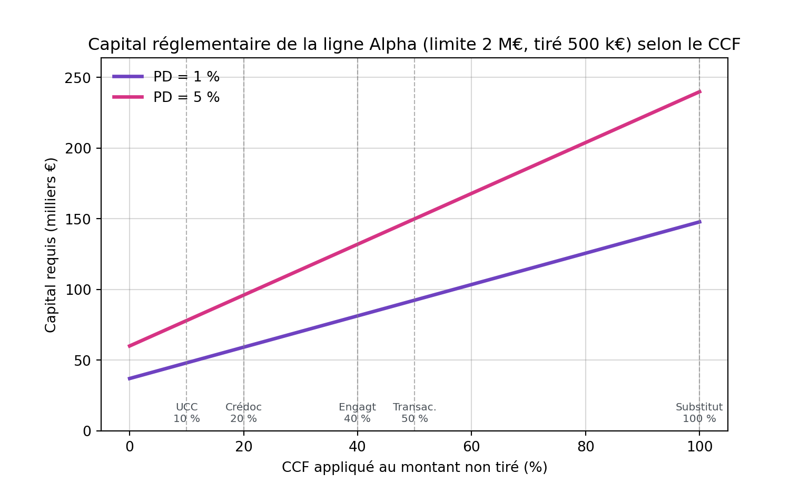

import numpy as np
from statistics import NormalDist
import matplotlib
matplotlib.use("Agg")
import matplotlib.pyplot as plt
# --- Brique centrale : conversion du hors-bilan en EAD ---
def ead(tire, non_tire, ccf):
"""Exposition au defaut = tire + CCF x non tire."""
return tire + ccf * non_tire
def euro(x):
return f"{round(x):,} €".replace(",", " ") # separateur de milliers : espaceLe Credit Conversion Factor (CCF) : du hors-bilan à l’exposition au défaut
Comment une promesse de financement devient une dette réelle : grille standard de Bâle III finalisé, approches IRB et estimation, illustrées par des exemples chiffrés
Risque de Crédit
Bâle III
EAD
Finance Quantitative
Réglementation
Le facteur de conversion de crédit (CCF) traduit les engagements hors-bilan non tirés en exposition au défaut (EAD). Intuition, grille de l’approche standard, traitement F-IRB et A-IRB, estimation empirique et exemples concrets chiffrés.
0.1 Qu’est-ce que le CCF ? L’intuition d’abord
La réglementation bancaire est peuplée d’acronymes obscurs, mais celui-ci recouvre une idée simple et puissante : mesurer la probabilité qu’une promesse d’argent se transforme en une dette réelle. Le Credit Conversion Factor (CCF), traduit en français par facteur de conversion en équivalent crédit, est l’outil qui permet cette traduction.
Pour le comprendre, il faut distinguer les deux natures d’exposition au risque d’une banque.
- Au bilan (on-balance sheet) : l’argent a déjà été décaissé. Un prêt immobilier en cours de remboursement, par exemple. Le risque porte sur 100 % du montant prêté.
- Hors-bilan (off-balance sheet) : la banque a pris un engagement, mais l’argent n’a pas encore été versé. Une ligne de crédit autorisée mais non utilisée, une caution, une garantie. Tant que rien n’est tiré, aucun euro ne figure à l’actif du bilan.
Le souci du régulateur (au travers des accords de Bâle) tient en une phrase : une entreprise qui s’approche du défaut tire sur toutes les lignes de crédit encore disponibles juste avant de s’effondrer. À court de liquidités, elle puise dans ses réserves de précaution. L’exposition de la banque gonfle donc précisément au moment où la contrepartie devient la plus risquée. Le hors-bilan d’hier devient le bilan de demain.
Le CCF est le pourcentage réglementaire qui anticipe ce basculement. Il répond à une question unique :
Quelle proportion de cet engagement non utilisé risque de se transformer en crédit effectif si le client fait défaut ?
Une fois le CCF appliqué, on obtient l’EAD (Exposure At Default, ou exposition au moment du défaut), qui sert de base au calcul des fonds propres exigés de la banque.
NotePré-requis : la chaîne EAD vers capital
Cet article suppose connue la chaîne qui transforme l’exposition en capital réglementaire : \(RWA = K \times EAD \times 12{,}5\), où \(K\) est l’exigence de capital par euro d’exposition. La dérivation de \(K\) pour les expositions Entreprises (modèle de Vasicek) est traitée dans un article dédié. Ici, le CCF agit en amont : c’est lui qui fixe la valeur de l’\(EAD\) alimentant cette formule.
0.2 La formule : convertir l’engagement en EAD
La mécanique est d’une simplicité trompeuse. On décompose tout engagement en deux blocs : la part tirée (déjà décaissée, au bilan) et la part non tirée (disponible, hors-bilan). L’\(EAD\) retient la totalité du tiré, mais seulement une fraction du non tiré, donnée par le CCF :
\[\boxed{EAD = \text{Encours tiré} + CCF \times \text{Montant non tiré}}\]
Le point crucial, souvent mal compris : le CCF ne s’applique qu’à la part non tirée. La part déjà décaissée constitue un risque plein, comme n’importe quel prêt. Si une ligne de 100 € est tirée à hauteur de 30 €, le risque direct au bilan est de 30 € ; le CCF ne s’applique qu’aux 70 € restants, ceux qui sont encore hors-bilan. Pour un engagement pur hors-bilan (une garantie qui n’a donné lieu à aucun décaissement), le tiré vaut zéro et la formule se réduit à \(EAD = CCF \times \text{Montant nominal}\).
NoteConventions de mesure
L’\(EAD\) réglementaire est mesurée brute de provisions spécifiques et de passages en perte partiels : elle représente l’exposition économique avant tout abattement comptable. Par ailleurs, l’\(EAD\) ne peut jamais être inférieure à l’encours tiré courant : on n’autorise pas un CCF négatif à l’échelle réglementaire, même si, comme on le verra, les CCF réalisés observés sur données peuvent l’être (remboursement partiel avant le défaut).
0.3 La grille de l’approche standard (Bâle III finalisé)
En approche standard (SA), la banque n’estime rien : elle applique des CCF forfaitaires fixés par le régulateur selon la nature de l’engagement. La logique est intuitive : plus un engagement est susceptible d’être appelé en cas de difficulté, plus son CCF est élevé. Bâle III finalisé (Basel Committee on Banking Supervision 2017, 2023), transposé en droit européen par le règlement CRR3 (Parlement européen et Conseil de l’Union européenne 2024), retient cinq compartiments :
| Engagement hors-bilan | CCF | Logique |
|---|---|---|
| Engagement révocable sans condition à tout moment, sans préavis (UCC) | 10 % | La banque peut théoriquement couper la ligne, mais le fait rarement à temps |
| Lettre de crédit documentaire à court terme, auto-liquidative, adossée au mouvement de marchandises | 20 % | La marchandise transportée sert de garantie implicite |
| Engagement (autre qu’UCC), quelle que soit la maturité | 40 % | Ligne de crédit confirmée non tirée : tirage probable mais non certain |
| Élément lié à une transaction (garantie de bonne fin, garantie de soumission, standby lié à une transaction) | 50 % | Appel conditionné à la défaillance opérationnelle du client |
| Substitut direct de crédit (garantie financière, standby tenant lieu de garantie de prêt, acceptation), achat à terme d’actifs | 100 % | La banque paie à coup sûr à la place du client : équivalent à un prêt |
Trois évolutions de Bâle III finalisé méritent l’attention du praticien.
ImportantCe qui a changé avec Bâle III finalisé
Le CCF des engagements passe à un taux unique de 40 %. Sous Bâle II, les lignes de crédit étaient converties selon leur maturité : 20 % en deçà d’un an, 50 % au-delà. Cette distinction encourageait un arbitrage réglementaire (fractionner un engagement long en lignes courtes renouvelables pour réduire le CCF). Bâle III finalisé y met fin avec un CCF unique de 40 %, quelle que soit la maturité. C’est ce taux que l’on retiendra dans les exemples qui suivent.
Le CCF des engagements révocables (UCC) passe de 0 % à 10 %. Historiquement, un engagement révocable sans condition - typiquement une autorisation de carte de crédit, annulable à tout instant - recevait un CCF de 0 % : aucune exposition n’était reconnue. La crise a montré qu’en pratique, une banque n’a ni le temps ni le courage commercial de couper ces lignes avant que le client ne tire l’argent. Un plancher de 10 % matérialise désormais ce risque résiduel.
La règle du minimum. Lorsqu’un engagement porte sur la mise à disposition future d’un autre élément hors-bilan, la banque applique le plus faible des deux CCF applicables, pour éviter une double pénalisation en cascade.
0.4 Trois exemples concrets
Ancrons la grille dans des situations courantes. On suivra une entreprise fictive, Alpha, dont l’exemple servira de fil rouge jusqu’au calcul de capital.
0.4.1 Exemple A : la ligne de crédit d’entreprise
L’entreprise Alpha a négocié une ligne de crédit (découvert autorisé) de 2 000 000 € pour couvrir d’éventuels besoins de trésorerie. À ce jour, elle n’en a utilisé que 500 000 €.
- Part au bilan (tirée) : \(500\,000\) € - risque plein.
- Part hors-bilan (non tirée) : \(2\,000\,000 - 500\,000 = 1\,500\,000\) €.
- CCF applicable : il s’agit d’un engagement confirmé, donc 40 % sous Bâle III finalisé.
\[EAD = \underbrace{500\,000}_{\text{tiré}} + \underbrace{0{,}40 \times 1\,500\,000}_{= \,600\,000} = 1\,100\,000 \text{ €}\]
La banque calcule donc ses fonds propres sur 1,1 M€, et non sur les 500 000 € réellement décaissés. Le supplément de 600 000 € correspond aux 40 % de la marge disponible que le régulateur anticipe de voir tirés avant un éventuel défaut.
AstuceL’effet du changement de cadre
Sous Bâle II, cette ligne de maturité supérieure à un an aurait reçu un CCF de 50 %, soit \(0{,}50 \times 1\,500\,000 = 750\,000\) € et une \(EAD\) de 1 250 000 €. Le passage au taux unique de 40 % de Bâle III finalisé abaisse ici l’\(EAD\) de 150 000 €.
0.4.2 Exemple B : la lettre de crédit documentaire
L’entreprise Beta importe pour 100 000 € de marchandises. Sa banque émet une lettre de crédit documentaire pour rassurer le fournisseur étranger. C’est un engagement hors-bilan de court terme, auto-liquidatif, adossé au mouvement physique des marchandises.
\[EAD = 0{,}20 \times 100\,000 = 20\,000 \text{ €}\]
La banque calcule ses exigences de fonds propres sur 20 000 €, et non sur les 100 000 € de notionnel : la marchandise transportée sert de garantie implicite, ce qui justifie un CCF faible de 20 %.
0.4.3 Exemple C : la garantie financière
La banque se porte garante à hauteur de 50 000 € pour l’entreprise Gamma auprès de l’administration. Si Gamma ne paie pas, la banque paiera à sa place, sans condition.
\[EAD = 1{,}00 \times 50\,000 = 50\,000 \text{ €}\]
C’est un substitut direct de crédit : l’appel de la garantie équivaut à un décaissement certain. Son CCF de 100 % la rend équivalente, pour le calcul du capital, à un prêt déjà accordé.
0.4.4 Récapitulatif
Les trois mêmes opérations, calculées d’un bloc en Python, illustrent comment une seule formule absorbe des engagements de natures très différentes.
| Opération | Tiré | Non tiré | CCF | EAD |
|---|---|---|---|---|
| Alpha - ligne de crédit | 500 000 € | 1 500 000 € | 40 % | 1 100 000 € |
| Beta - crédit documentaire | 0 € | 100 000 € | 20 % | 20 000 € |
| Gamma - garantie financière | 0 € | 50 000 € | 100 % | 50 000 € |
0.5 Au-delà de la grille : le CCF en approche IRB
En approche par notations internes (IRB), le traitement du CCF dépend du niveau d’avancement de la banque.
0.5.1 F-IRB : des CCF supervisés
En approche fondation (F-IRB), la banque estime elle-même la \(PD\), mais reçoit du régulateur la \(LGD\) et les CCF. Sous Bâle III finalisé, les CCF de la F-IRB sont alignés sur la grille de l’approche standard présentée ci-dessus. C’est un changement notable par rapport à Bâle II, où la F-IRB appliquait par exemple un CCF de 75 % aux engagements. Désormais, l’engagement non tiré d’Alpha reçoit le même CCF de 40 % qu’en approche standard.
0.5.2 A-IRB : des CCF estimés, mais encadrés
En approche avancée (A-IRB), la banque est autorisée à estimer ses propres CCF à partir de son historique de défauts. C’est le seul régime où le CCF devient un véritable paramètre modélisé, au même titre que la \(PD\) et la \(LGD\). Cette liberté s’accompagne de deux garde-fous introduits par Bâle III finalisé.
Un plancher d’EAD. L’\(EAD\) estimée en interne ne peut être inférieure à la somme de l’encours tiré et de 50 % de l’exposition hors-bilan calculée avec le CCF de l’approche standard :
\[EAD_{\text{A-IRB}} = \max\!\Big(\underbrace{\text{Tiré} + CCF_{\text{interne}} \times \text{Non tiré}}_{\text{estimation propre}},\ \underbrace{\text{Tiré} + 0{,}5 \times CCF_{\text{SA}} \times \text{Non tiré}}_{\text{plancher réglementaire}}\Big)\]
Un périmètre restreint. Bâle III finalisé a retiré l’A-IRB pour certaines classes d’actifs jugées trop peu nombreuses pour une estimation fiable : les grandes entreprises (chiffre d’affaires consolidé supérieur à 500 M€), les banques et les autres établissements financiers basculent en F-IRB. L’estimation interne du CCF reste donc concentrée sur la clientèle de détail et les PME.
Reprenons la ligne d’Alpha (tiré 500 000 €, non tiré 1 500 000 €, \(CCF_{\text{SA}}\) = 40 %) et confrontons deux estimations internes au plancher.
def ead_airb(tire, non_tire, ccf_interne, ccf_sa):
estimation = ead(tire, non_tire, ccf_interne)
plancher = ead(tire, non_tire, 0.5 * ccf_sa)
return max(estimation, plancher)| CCF interne | EAD estimée | Plancher (50 % × CCF_SA) | EAD retenue | Plancher actif ? |
|---|---|---|---|---|
| 25 % | 875 000 € | 800 000 € | 875 000 € | Non |
| 10 % | 650 000 € | 800 000 € | 800 000 € | Oui |
Avec un CCF interne de 25 %, l’estimation propre (875 000 €) dépasse le plancher (800 000 €) : la banque conserve le bénéfice de son modèle. Mais avec un CCF interne de 10 %, l’estimation (650 000 €) tombe sous le plancher : l’\(EAD\) est relevée à 800 000 €. Le plancher empêche un modèle trop optimiste de réduire le capital en deçà de la moitié du traitement standard.
0.6 Estimer le CCF sur données
Pour les portefeuilles éligibles à l’A-IRB, encore faut-il estimer le CCF. Le principe : mesurer, sur les facilités ayant fait défaut par le passé, le tirage additionnel survenu entre une date de référence antérieure et la date de défaut. Le CCF réalisé d’une facilité se définit comme :
\[CCF_{\text{réalisé}} = \frac{\text{Tiré}_{\text{défaut}} - \text{Tiré}_{\text{réf}}}{\text{Limite} - \text{Tiré}_{\text{réf}}} = \frac{\text{Tirage additionnel}}{\text{Marge disponible à la date de référence}}\]
Reste à fixer la date de référence, ce qui distingue les principales méthodes d’estimation (Moral 2011) :
- Méthode des cohortes (cohort method) : on découpe l’historique en fenêtres calendaires (typiquement 12 mois) ; la date de référence est le début de la fenêtre. C’est l’approche privilégiée par les régulateurs européens (European Banking Authority 2017) pour sa robustesse.
- Méthode à horizon fixe (fixed-horizon) : la date de référence est fixée à un horizon constant avant le défaut (par exemple exactement 12 mois avant), ce qui cible le comportement de tirage sur l’année précédant la défaillance.
- Méthode à horizon variable (momentum) : on retient toutes les dates d’observation dans l’horizon, ce qui maximise l’échantillon au prix d’une corrélation entre observations.
Appliquons la formule à trois facilités défaillantes, toutes calquées sur Alpha : limite 2 000 000 €, tiré 500 000 € douze mois avant le défaut (marge disponible : 1 500 000 €). Seul diffère le comportement de tirage jusqu’au défaut.
def ccf_realise(tire_ref, tire_defaut, limite):
marge = limite - tire_ref
return (tire_defaut - tire_ref) / marge| Situation | Tiré au défaut | CCF réalisé | CCF borné [0 %, 100 %] |
|---|---|---|---|
| Tirage partiel de la marge | 1 400 000 € | 60.0 % | 60 % |
| Remboursement avant défaut | 300 000 € | -13.3 % | 0 % |
| Dépassement de la limite | 2 100 000 € | 106.7 % | 100 % |
Ces trois cas résument toute la difficulté de l’estimation. La première facilité livre un CCF « propre » de 60 %. La deuxième, remboursée avant le défaut, produit un CCF négatif, borné à 0 %. La troisième, qui déborde sa limite (découvert technique, intérêts capitalisés), génère un CCF supérieur à 100 %, borné à 100 %.
NotePourquoi les CCF réalisés sont délicats à manipuler
Les CCF observés sont statistiquement instables : ils peuvent dépasser 100 % (dépassement de limite) ou être négatifs (remboursement), et leur dénominateur explose pour les facilités déjà presque entièrement tirées à la date de référence. La pratique consiste donc à écarter les facilités sans marge disponible, à borner ou winsoriser les CCF dans \([0\,\%,\,100\,\%]\), et à les pondérer par le nombre de défauts (default-weighted average) en intégrant une marge de prudence et une composante de ralentissement (downturn) (European Banking Authority 2017).
0.7 Pourquoi le CCF pilote le capital
Le CCF n’est pas une curiosité technique : il pilote directement le capital, puisqu’il fixe l’\(EAD\) qui multiplie l’exigence \(K\). Mesurons-le sur la ligne d’Alpha (tiré 500 000 €, non tiré 1 500 000 €) en faisant varier le CCF, et en réutilisant la formule de capital Bâle III pour les expositions Entreprises (Basel Committee on Banking Supervision 2017).
_N = NormalDist()
Phi = _N.cdf
Phi_inv = _N.inv_cdf
def rho_corp(pd): # correlation d'actifs imposee
w = (1 - np.exp(-50 * pd)) / (1 - np.exp(-50))
return 0.12 * w + 0.24 * (1 - w)
def b_factor(pd): # lissage de la maturite
return (0.11852 - 0.05478 * np.log(pd)) ** 2
def wcdr(pd, rho): # taux de defaut en scenario de crise (99,9 %)
return Phi((Phi_inv(pd) + np.sqrt(rho) * Phi_inv(0.999)) / np.sqrt(1 - rho))
def capital_K(pd, lgd, M): # exigence de capital par euro d'EAD
rho = rho_corp(pd)
ul = (wcdr(pd, rho) - pd) * lgd
ma = (1 + (M - 2.5) * b_factor(pd)) / (1 - 1.5 * b_factor(pd))
return ul * matire, non_tire = 500_000, 1_500_000
lgd, M = 0.45, 2.5
ccf_grid = np.linspace(0, 1, 200)
ead_grid = tire + ccf_grid * non_tire
plt.figure(figsize=(8, 4.8))
ymax = 0
for pd, col in [(0.01, "#6f42c1"), (0.05, "#d63384")]:
cap = capital_K(pd, lgd, M) * ead_grid / 1000 # en milliers d'euros
ymax = max(ymax, cap.max())
plt.plot(100 * ccf_grid, cap, lw=2.5, color=col, label=f"PD = {100*pd:.0f} %")
points = {"UCC\n10 %": 0.10, "Crédoc\n20 %": 0.20, "Engagt\n40 %": 0.40,
"Transac.\n50 %": 0.50, "Substitut\n100 %": 1.00}
for label, ccf in points.items():
plt.axvline(100 * ccf, ls="--", color="grey", lw=0.8, alpha=0.6)
plt.text(100 * ccf, ymax * 0.02, label, ha="center", va="bottom",
fontsize=7.5, color="#495057")
plt.xlabel("CCF appliqué au montant non tiré (%)")
plt.ylabel("Capital requis (milliers €)")
plt.title("Capital réglementaire de la ligne Alpha (limite 2 M€, tiré 500 k€) selon le CCF")
plt.grid(color="grey", alpha=0.3)
plt.legend(frameon=False, loc="upper left")
plt.ylim(0, ymax * 1.1)(0.0, 263.74375973274033)
La lecture est sans appel : à \(PD\) et \(LGD\) fixées, le capital croît linéairement avec le CCF, qui agit comme un simple multiplicateur de l’\(EAD\). Faire passer l’engagement d’Alpha du compartiment UCC (10 %) au compartiment substitut de crédit (100 %) fait bondir l’\(EAD\) de 650 000 € à 2 000 000 €, et le capital dans la même proportion. Le choix du compartiment réglementaire, ou la qualité de l’estimation interne, pèse autant sur le capital que la note de crédit de la contrepartie.
Il faut enfin rappeler que l’\(EAD\) alimente aussi la perte attendue (\(EL = PD \times LGD \times EAD\)), donc les provisions. Un CCF mal calibré fausse simultanément les deux lignes de défense de la banque : les provisions comptables et les fonds propres prudentiels.
0.8 Limites et points de vigilance
Sous son apparente simplicité, l’équation \(EAD = \text{tiré} + CCF \times \text{non tiré}\) recèle plusieurs difficultés :
- Instabilité statistique. Les CCF réalisés sont dispersés, bornés artificiellement et sensibles au choix de la date de référence. Deux méthodes d’estimation appliquées au même portefeuille peuvent livrer des moyennes sensiblement différentes (Moral 2011).
- Procyclicité. Les tirages se concentrent en période de stress, lorsque plusieurs contreparties subissent le même choc. Une moyenne calculée en phase d’expansion sous-estime le CCF, d’où l’exigence d’une composante de ralentissement.
- Rareté des défauts. Sur les portefeuilles à faible taux de défaut, le nombre de facilités défaillantes est trop faible pour une estimation robuste - c’est la raison du retrait de l’A-IRB pour les grandes entreprises et les banques.
- Définition de la limite. Le dénominateur du CCF suppose une limite contractuelle claire. Pour les engagements sans plafond explicite, la mesure du non tiré devient elle-même conventionnelle.
- Interaction avec la LGD. Le tirage additionnel modifie la structure de l’exposition et peut affecter le taux de recouvrement : CCF et LGD ne sont pas strictement indépendants, alors que la formule les traite comme tels.
Ces réserves expliquent l’encadrement réglementaire croissant - planchers d’\(EAD\), périmètre A-IRB restreint, alignement de la F-IRB sur la grille standard - qui réduit progressivement la latitude des modèles internes sur ce paramètre.
0.9 Synthèse
Le CCF est le pont indispensable entre les activités traditionnelles de prêt (le bilan) et les activités d’engagement et de garantie (le hors-bilan). Sans lui, une banque pourrait accumuler des promesses de financement quasi illimitées sans immobiliser le moindre euro de capital - jusqu’au jour où un choc transformerait simultanément toutes ces promesses en dettes réelles.
| Dimension | Contenu clé |
|---|---|
| Équation fondamentale | \(EAD = \text{Tiré} + CCF \times \text{Non tiré}\) |
| Rôle économique | Anticiper le tirage des lignes disponibles avant le défaut |
| Grille SA (Bâle III finalisé) | UCC 10 % · crédoc 20 % · engagement 40 % · transaction 50 % · substitut 100 % |
| F-IRB | CCF supervisés, alignés sur la grille SA |
| A-IRB | CCF estimés, plancher \(EAD \geq \text{Tiré} + 0{,}5\,CCF_{\text{SA}}\times\text{Non tiré}\), périmètre restreint |
| Estimation | \(CCF_{\text{réalisé}} = \dfrac{\text{Tiré}_{\text{défaut}} - \text{Tiré}_{\text{réf}}}{\text{Limite} - \text{Tiré}_{\text{réf}}}\), méthodes cohortes / horizon fixe |
| Impact capital | Multiplicateur linéaire de l’\(EAD\), donc du \(RWA\) et de l’\(EL\) |
Maîtriser le CCF, c’est en définitive refuser de confondre ce qu’une banque a prêté avec ce qu’elle risque réellement de perdre.
0.10 Références bibliographiques
Basel Committee on Banking Supervision. 2017. Basel III: Finalising Post-Crisis Reforms. Bank for International Settlements.
Basel Committee on Banking Supervision. 2023. The Basel Framework - CRE: Calculation of RWA for Credit Risk. Bank for International Settlements.
European Banking Authority. 2017. Guidelines on PD Estimation, LGD Estimation and the Treatment of Defaulted Exposures (EBA/GL/2017/16). European Banking Authority.
Moral, Gregorio. 2011. « EAD Estimates for Facilities with Explicit Limits ». In The Basel II Risk Parameters: Estimation, Validation, Stress Testing - with Applications to Loan Risk Management, 2ᵉ éd., édité par Bernd Engelmann et Robert Rauhmeier. Springer.
Parlement européen et Conseil de l’Union européenne. 2024. Règlement (UE) 2024/1623 (CRR3) modifiant le règlement (UE) no 575/2013 en ce qui concerne les exigences relatives au risque de crédit. Journal officiel de l’Union européenne.